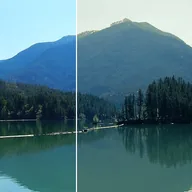

Gesplitste tinten

Kleurt de schaduwen naar de ene kleurtoon en de hooglichten naar een andere, met behoud van zwart, wit en helderheid. Schaduwniveau buigt de helderheidscurve en Hooglichtniveau verschuift waar de hooglichtkleur begint. De stijl Verloopkaart geeft elke pixel een kleur op basis van alleen de helderheid.
Instellingen
| Instelling | Type | Bereik | Standaard |
|---|---|---|---|
| Kleurtoon schaduwen | Hoek | -360° tot 360° | 200° |
| Hoeveelheid schaduw | Getal | 0 tot 1 | 0.6 |
| Kleurtoon hooglichten | Hoek | -360° tot 360° | 35° |
| Hoeveelheid hooglicht | Getal | 0 tot 1 | 0.6 |
| Schaduwniveau | Getal | -0.9 tot 1 | 0 |
| Hooglichtniveau | Getal | -1 tot 0.9 | 0 |
| Stijl | Keuze | Tint, Verloopkaart | Tint |